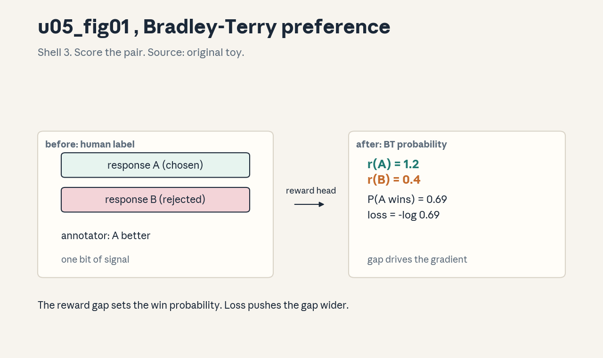
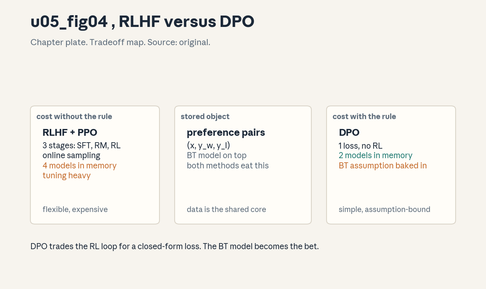
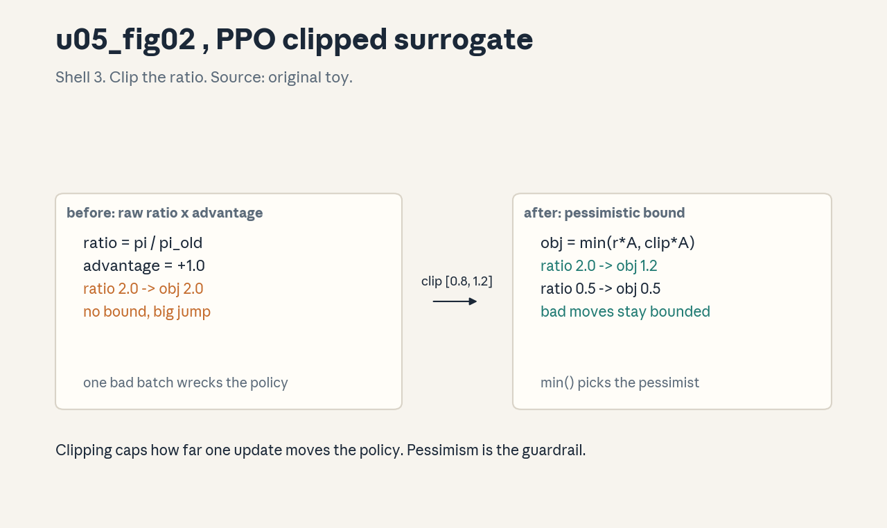
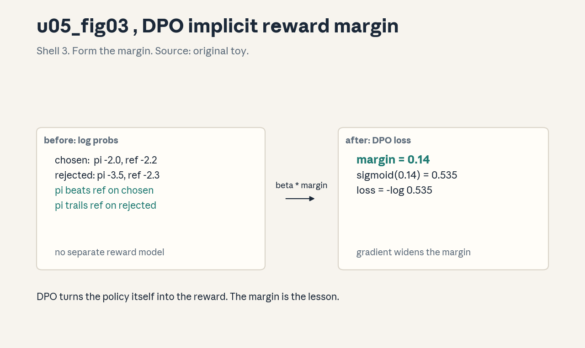

U05 · Preference tuning and policy optimization
U05 , Preference tuning and policy optimization
Prerequisites: P08, P17, P18. Bridge links in ../prerequisites.md.
Lecture anchor: L3 (Oct 9, 2026) and L4 (Oct 16, 2026). Claim class:
OFFICIAL-SYLLABUS for RLHF, DPO, reward design, policy gradients, PPO.
REQUESTED-BRANCH for pairwise-label protocol detail, policy ratios, KL
estimators, advantages, PPO variants, DPO derivation assumptions,
reference-model mechanics, optimization pathologies, evaluation
protocol. All leaves: PLANNED / SOURCE ATTRIBUTION PENDING until slide
or transcript extraction verifies them.
Notation: see ../notation_and_shapes.md. Glossary: ../glossary.md.
Not yet understood
Concepts this unit uses but does not teach. Each one arrives in a later unit.
- Reasoning RL (U06): GRPO, RLVR, verifiers, test-time scaling.
- RAG and agents (U07): retrieval pipelines and ReAct loops.
- LLM evaluation (U08): judging, bias, calibration, intervals.
Local remediation , BT model, KL, policy gradient
Do this block first if diagnostic items D8 or D9 were not full marks.
R0.1 Bradley-Terry. Two items with scores r_w, r_l. P(w beats l) = sigmoid(r_w - r_l). The gap drives everything: gap 0 -> 0.5, gap 2 -> 0.88. The reward model learns scores that make observed choices likely.
R0.2 KL divergence. KL(P||Q) = sum P log(P/Q). It measures how far P drifts from Q, in nats. Direction matters: KL(pi||pi_ref) penalizes the new policy for leaving the reference.
R0.3 Policy gradient intuition. J = E[return]. The gradient pushes up the log-probability of actions with high return: dJ ~ E[return * d log pi(a|s)]. Advantages (return minus baseline) replace raw return to cut variance without adding bias.
C01: reward modelling
Leaf id cme295-U05-C01. Claim class OFFICIAL-SYLLABUS (“Reward
design”, L4).
Status PLANNED / SOURCE ATTRIBUTION PENDING.
-
Source mapping, scope, objectives, dependencies. Maps to L4 “Reward design”. Scope: learning a scalar preference score. Objectives: write the BT loss, compute it by hand, and state what the reward means. Depends on P08, R0.1.
-
Motivating question and toy. Question: human judgments are comparisons (“A better than B”), but RL needs a number, how do you convert? Toy: r(A) = 1.2, r(B) = 0.4. P(A wins) = sigmoid(0.8) = 0.69. Loss = -log 0.69 = 0.371.
-
Mental model. The reward model is a judge with one output: a scalar. Training shows it pairs and the human’s pick, the BT loss adjusts scores so the picks become probable. The score has no absolute meaning, only gaps matter.
-
Objects, symbols, units, shapes, assumptions. r_phi(x, y): scalar, unitless. Data: triples (x, y_w, y_l). Loss: -log sigmoid(r_w - r_l). Assumption: human choices follow the BT model (transitive, noiseless enough).
-
Derivation / mechanism. Maximum likelihood on the BT model: each pair contributes log P(y_w beats y_l). The gradient is (1 - p) * (d r_w - d r_l): it widens the gap, with force proportional to surprise. Architecture: the SFT model plus a scalar head, trained on the pairs.
-
Computed example. From
visuals/render_u05.py: r_w = 1.2, r_l = 0.4, P = 0.6900, loss = 0.3711. Figure:
. -
Algorithm and reference implementation.
rm_loss(r_w, r_l): return -log(sigmoid(r_w - r_l)). Three lines. The data loader yields (prompt, chosen, rejected) triples. -
Correctness checks and expected output. Check: loss falls, accuracy (r_w > r_l) rises above 50%, scores are not calibrated probabilities. If accuracy is 50%, the labels are noise or flipped.
-
Complexity, memory, statistical efficiency, stability, costs. One more model to train (same size as the policy usually). Labels are expensive, agreement rates bound the achievable accuracy.
-
Nearest alternatives and selection boundaries. Direct human scores (noisy, uncalibrated). AI feedback (cheaper, biased). DPO (C09) skips the reward model. Choose a reward model when RL needs dense scores.
-
Failure case, broken assumption, counterexample. Broken assumption: the BT model holds. Counterexample: intransitive or noisy human preferences break the scalar story, the reward then encodes noise as signal. Check annotator agreement first.
-
Research reading and falsifiable extension. Read Ouyang et al. (2022) reward-model sections and Bradley-Terry (1952). Extension: measure accuracy vs annotator agreement, find the ceiling the noise imposes.
-
Breadth recall, deep oral ladder, unfamiliar transfer. Recall: write the BT loss. Ladder: define the score -> compute the toy -> justify the gap gradient -> implement rm_loss -> predict the noise failure. Transfer: reward model for code quality, describe the pairs.
-
Lab/exercises with answers separated. E1: loss for r_w = 0.5, r_l = 0.5. E2: accuracy when scores are random. E3: why are absolute scores meaningless? Key:
../keys/u05_answers.mdR1-R3. -
Visual units, provenance, accessibility, audit rows. Figure
u05_fig01.png: Shell 3, one rule (reward head + BT), before human label, after BT probability. Source: original toy. Numbers fromrender_u05.py.
C02: pairwise labels
Leaf id cme295-U05-C02. Claim class REQUESTED-BRANCH.
Status PLANNED / SOURCE ATTRIBUTION PENDING.
-
Source mapping, scope, objectives, dependencies. Requested branch (label protocol detail). Scope: how preference data is made. Objectives: write an annotation guideline, handle ties and disagreement, and state the quality bar. Depends on C01.
-
Motivating question and toy. Question: “which response is better” is vague, how do you make 100 annotators agree? Toy rubric: helpfulness, truthfulness, harmlessness, in that order. Ties allowed, both-bad flagged.
-
Mental model. Labels are manufactured, not found. The guideline is the product spec: dimensions, priority order, tie policy, escalation. Agreement rate measures the spec’s clarity.
-
Objects, symbols, units, shapes, assumptions. Label: (x, y_a, y_b, choice in {a, b, tie}). Agreement: fraction of pairs where two annotators agree. Assumption: the rubric captures what the product wants.
-
Derivation / mechanism. No derivation: a process. Write the rubric, pilot on 200 pairs, measure agreement, revise, scale. 70%+ agreement is workable, below that the reward learns noise.
-
Computed example. Toy: 1000 pairs, 720 agree, 180 tie, 100 disagree. Usable: 900 (ties train weakly or drop). The 10% disagreement is the noise floor the reward model cannot beat.
-
Algorithm and reference implementation.
label_batch(pairs, rubric): present side by side, blinded order, record choice + confidence, adjudicate disagreements. The blinding (random A/B order) removes position bias. -
Correctness checks and expected output. Check: agreement rate reported, position bias ~50/50, tie rate sane. If one side wins 80%, the presentation is biased.
-
Complexity, memory, statistical efficiency, stability, costs. Human time is the cost: minutes per pair. Quality beats quantity, 10k good pairs beat 100k noisy ones.
-
Nearest alternatives and selection boundaries. AI labels (cheap, inherits model biases). Expert labels (expensive, gold). Choose the mix by the budget and the stakes.
-
Failure case, broken assumption, counterexample. Broken assumption: annotators share the rubric’s values. Counterexample: cultural or domain differences in “helpful”, the reward then encodes the annotator pool, not the user base. Match the pool to the users.
-
Research reading and falsifiable extension. Read the InstructGPT labeling appendix (Ouyang et al., 2022). Extension: relabel 200 pairs with a different pool, measure the reward model’s score shift.
-
Breadth recall, deep oral ladder, unfamiliar transfer. Recall: name the rubric dimensions. Ladder: define the label -> compute agreement -> justify blinding -> implement the protocol -> predict the pool-mismatch failure. Transfer: labels for a medical QA bot, name the extra dimension.
-
Lab/exercises with answers separated. E1: usable pairs from 500 with 15% ties, 10% disagreement. E2: why blind the order? E3: agreement 55%: what do you do? Key:
../keys/u05_answers.mdR4-R6. -
Visual units, provenance, accessibility, audit rows. Atomic units: pair, rubric, choice. A flow (pairs -> rubric -> blinded choice -> agreement) is the right medium, Mermaid (<= 8 nodes) fits. Logged as a diagram spec.
C03: RLHF
Leaf id cme295-U05-C03. Claim class OFFICIAL-SYLLABUS (L3
“Preference tuning (RLHF, DPO)”, L4).
Status PLANNED / SOURCE ATTRIBUTION PENDING.
-
Source mapping, scope, objectives, dependencies. Maps to L3/L4. Scope: the three-stage pipeline. Objectives: name the stages, state what each produces, and explain why all three exist. Depends on C01, U04 C05, P17.
-
Motivating question and toy. Question: SFT imitates, but imitation cannot rank two good answers, how do you optimize preference directly? Toy pipeline: SFT model -> reward model on pairs -> PPO against the reward.
-
Mental model. Stage 1 (SFT): learn the format. Stage 2 (RM): learn the judge. Stage 3 (RL): optimize the judge’s score with a KL leash to stage 1. Each stage fixes the previous stage’s blind spot.
-
Objects, symbols, units, shapes, assumptions. pi_sft, r_phi, pi_theta (initialized from pi_sft). Objective: E[r_phi] - beta KL(pi_theta || pi_sft). Assumption: the reward generalizes beyond the pairs, the KL keeps the policy honest.
-
Derivation / mechanism. RL fine-tuning maximizes expected reward. Without the KL term the policy exploits reward flaws (C11). PPO (C07) is the optimizer, the KL is the leash. The three stages separate concerns: behavior, judgment, control.
-
Computed example. Toy: base reward 0.5, after RLHF 1.8, KL 0.1 nats (illustrative magnitudes). The KL budget is the dial: more KL, more reward, more risk. Figure:

(chapter plate, left column). -
Algorithm and reference implementation.
rlhf(): pi = sft(), rm = train_rm(pairs), pi = ppo(pi, rm, kl_coef). Three calls. The engineering is in the third. -
Correctness checks and expected output. Check: reward rises on held-out prompts, KL stays in budget, canary behaviors hold (U04 C11). If reward rises and KL explodes, the leash broke.
-
Complexity, memory, statistical efficiency, stability, costs. Four models in memory (policy, ref, reward, value): the cost driver. RL is sample-hungry and twitchy, that is the price of direct optimization.
-
Nearest alternatives and selection boundaries. DPO (C09): no RL, one loss. Rejection sampling: simple, offline. Choose RLHF when the reward needs online exploration, DPO when pairs suffice.
-
Failure case, broken assumption, counterexample. Broken assumption: higher reward = better model. Counterexample: reward hacking (C11): the policy finds the reward’s blind spots and the metric lies. The KL leash and evals are the defense.
-
Research reading and falsifiable extension. Read Ouyang et al. (2022, InstructGPT) end to end. Extension: ablate the KL term, measure reward vs human preference and find where they diverge.
-
Breadth recall, deep oral ladder, unfamiliar transfer. Recall: name the stages and their outputs. Ladder: define the pipeline -> trace the toy -> justify the KL -> implement rlhf -> predict the hacking failure. Transfer: RLHF for a summarizer, name the reward’s blind spot.
-
Lab/exercises with answers separated. E1: why not skip SFT? E2: why not skip the reward model (RL on human scores)? E3: four models in memory: name them. Key:
../keys/u05_answers.mdR7-R9. -
Visual units, provenance, accessibility, audit rows. Chapter plate
u05_fig04.png: left the RLHF column (3 stages, cost), center the shared object (preference pairs), right DPO. Source: original.
C04: policy ratios
Leaf id cme295-U05-C04. Claim class REQUESTED-BRANCH.
Status PLANNED / SOURCE ATTRIBUTION PENDING.
-
Source mapping, scope, objectives, dependencies. Requested branch. Scope: the ratio at the heart of PPO. Objectives: write rho, explain importance weighting, and state when the ratio is dangerous. Depends on P17, R0.3.
-
Motivating question and toy. Question: PPO updates the policy with data from the old policy, how do you correct for the mismatch? Toy: rho = pi_new(a) / pi_old(a) = 0.8 / 0.4 = 2.0. The action is now twice as likely, weight its advantage by 2.
-
Mental model. The ratio is a currency converter between policies. Data earned under pi_old spends under pi_new at the rho exchange rate. Big rho means the converter is unreliable.
-
Objects, symbols, units, shapes, assumptions. rho_t = pi_theta(a_t|s_t) / pi_old(a_t|s_t), unitless, per token. Assumption: pi_old has support everywhere pi_theta goes (else division by ~zero).
-
Derivation / mechanism. Importance sampling: E_{pi_new}[f] = E_{pi_old}[rho f]. The surrogate objective rho * A_hat estimates the new policy’s advantage from old data. The estimator is unbiased but its variance grows with rho.
-
Computed example. Toy: pi_old = 0.4, pi_new = 0.8, A = 1: surrogate = 2.0. If pi_new = 0.04: rho = 0.1, surrogate 0.1. The ratio amplifies moves away from old data, that is exactly what PPO’s clip (C07) restrains.
-
Algorithm and reference implementation.
ratio(new_logp, old_logp): return exp(new_logp - old_logp). Compute in log space for stability. Two lines. -
Correctness checks and expected output. Check: rho = 1 at the first step (policies identical), mean rho ~= 1 early, extreme rho values are rare. If mean rho drifts far from 1, the policy moved too fast.
-
Complexity, memory, statistical efficiency, stability, costs. O(1) per token. Statistically: the variance bomb. PPO exists to defuse it.
-
Nearest alternatives and selection boundaries. Trust regions (TRPO): hard KL constraint, second-order. Choose PPO’s clipped ratio for simplicity, TRPO when the constraint must be exact.
-
Failure case, broken assumption, counterexample. Broken assumption: the ratio stays near 1. Counterexample: after a big update, rho hits 10+ and the surrogate explodes, the next update wrecks the policy. The clip is the guardrail.
-
Research reading and falsifiable extension. Read Schulman et al. (2017, PPO). Extension: log the rho histogram during a run, report the fraction outside [0.8, 1.2].
-
Breadth recall, deep oral ladder, unfamiliar transfer. Recall: write rho and its role. Ladder: define the ratio -> compute the toy -> justify importance weighting -> implement ratio -> predict the explosion. Transfer: ratios in off-policy evaluation, state the same danger.
-
Lab/exercises with answers separated. E1: rho for new 0.9, old 0.3. E2: why log space? E3: what does mean rho >> 1 signal? Key:
../keys/u05_answers.mdR10-R12. -
Visual units, provenance, accessibility, audit rows. Atomic units: old prob, new prob, ratio. A number line (0.5 - 1 - 2, safe zone marked) is the right medium. Logged as a sketch spec.
C05: KL
Leaf id cme295-U05-C05. Claim class REQUESTED-BRANCH.
Status PLANNED / SOURCE ATTRIBUTION PENDING.
-
Source mapping, scope, objectives, dependencies. Requested branch. Scope: the KL anchor in RLHF/PPO/DPO. Objectives: write the KL penalty, compute it on a toy, and explain the direction. Depends on P08, R0.2.
-
Motivating question and toy. Question: the reward says “go”, what stops the policy from going insane? Toy: KL(pi||pi_ref) = 0.1 nats. Penalty beta * 0.1 subtracted from reward. The leash has a price per nat.
-
Mental model. KL is the distance from home. The reference policy is home (the SFT model). Every nat of drift costs beta. The policy may wander, but it pays.
-
Objects, symbols, units, shapes, assumptions. KL(pi_theta || pi_ref) = E_{pi_theta}[log pi_theta - log pi_ref], nats, per token averaged. Direction: new || old (forward KL is mode-covering). Assumption: pi_ref is the trustworthy base.
-
Derivation / mechanism. The RLHF objective: max E[r] - beta KL. The KL term is a Lagrange-style soft constraint: beta is the exchange rate between reward and drift. Estimator on samples: mean(log pi - log pi_ref). Schulman’s unbiased estimator: r - log r - 1 with r = pi_ref/pi (lower variance).
-
Computed example. Toy: pi = [0.7, 0.3], ref = [0.5, 0.5]. KL = 0.7 log(0.7/0.5) + 0.3 log(0.3/0.5) = 0.2356 - 0.1532 = 0.0824 nats. Small drift, small price.
-
Algorithm and reference implementation.
kl_penalty(logp, ref_logp, beta): return beta * (logp - ref_logp).mean(). Three lines. The unbiased variant is one more line. -
Correctness checks and expected output. Check: KL >= 0, KL = 0 iff policies match, rises as training proceeds. If KL is negative, the estimator or the direction is wrong.
-
Complexity, memory, statistical efficiency, stability, costs. Needs the reference model in memory (C10). Cheap per token, expensive in VRAM.
-
Nearest alternatives and selection boundaries. Hard KL constraint (TRPO). Adaptive beta controllers. Choose the fixed penalty for simplicity, adapt beta when the KL drifts off target.
-
Failure case, broken assumption, counterexample. Broken assumption: small KL means safe. Counterexample: the policy can change behavior a lot within small KL (the reward hack lives in the KL budget). KL bounds drift, not misbehavior.
-
Research reading and falsifiable extension. Read Schulman (2020, KL estimators blog). Extension: compare the naive and unbiased KL estimators’ variance on a toy.
-
Breadth recall, deep oral ladder, unfamiliar transfer. Recall: write the penalty and its direction. Ladder: define the leash -> compute 0.0824 -> justify the direction -> implement kl_penalty -> predict the small-KL hack. Transfer: KL anchor for a fine-tuned classifier, state the reference.
-
Lab/exercises with answers separated. E1: KL for pi = [1, 0], ref = [0.5, 0.5]. E2: why forward, not reverse? E3: what does beta = 0 do? Key:
../keys/u05_answers.mdR13-R15. -
Visual units, provenance, accessibility, audit rows. Atomic units: home, drift, price. Lesson plate: before (policy at home) -> rule (pay beta per nat) -> after (policy within budget). Logged as a plate spec.
C06: advantages
Leaf id cme295-U05-C06. Claim class REQUESTED-BRANCH.
Status PLANNED / SOURCE ATTRIBUTION PENDING.
-
Source mapping, scope, objectives, dependencies. Requested branch. Scope: variance reduction in policy gradients. Objectives: define the advantage, compute it on a toy, and explain the baseline. Depends on P17, R0.3.
-
Motivating question and toy. Question: returns are noisy, how do you know if an action was good or just lucky? Toy: return 10, baseline (value) 6: advantage +4. The action beat expectations by 4.
-
Mental model. The advantage is the surprise: return minus what was expected. Positive: do more of this. Negative: do less. The baseline centers the signal so the gradient is not drowned in the mean return.
-
Objects, symbols, units, shapes, assumptions. A(s, a) = Q(s, a) - V(s), unitless-ish (reward units). Estimated by GAE: weighted sum of TD errors. Assumption: the value function is a decent baseline (bias-variance trade).
-
Derivation / mechanism. Subtracting a state-dependent baseline from the return leaves the policy gradient unbiased (the baseline’s expectation against d log pi is zero) and cuts variance. GAE(lambda): A_t = sum (gamma lambda)^l delta_{t+l}, lambda = 0 is TD (low variance, biased), lambda = 1 is Monte Carlo (unbiased, noisy).
-
Computed example. Toy: rewards [0, 0, 10], gamma = 1, values [3, 5, 8]. TD errors: delta_2 = 10 - 8 = 2, delta_1 = 0 + 8 - 5 = 3, delta_0 = 0 + 5 - 3 = 2. GAE(1): A_0 = 2 + 3 + 2 = 7. The advantage flows backward.
-
Algorithm and reference implementation.
gae(rewards, values, gamma, lam): walk backward, accumulate delta + gammalamnext. Eight lines. Normalize advantages per batch (common practice). -
Correctness checks and expected output. Check: with lambda = 1 the advantages match Monte Carlo returns minus values, mean advantage ~0 after normalization, no NaN. If advantages explode, the value function diverged.
-
Complexity, memory, statistical efficiency, stability, costs. O(T) per sequence. Needs a value head (another model output). The variance cut is what makes PPO train at all.
-
Nearest alternatives and selection boundaries. Raw returns (noisy). Reward-to-go minus mean (simple baseline). Choose GAE as the default, tune lambda in [0.9, 0.99].
-
Failure case, broken assumption, counterexample. Broken assumption: the value function is accurate. Counterexample: a bad value baseline biases every advantage, the policy chases phantom signal. Value loss matters as much as policy loss.
-
Research reading and falsifiable extension. Read Schulman et al. (2016, GAE). Extension: sweep lambda on a toy MDP, plot bias vs variance of the gradient.
-
Breadth recall, deep oral ladder, unfamiliar transfer. Recall: write A and the baseline argument. Ladder: define the surprise -> compute the toy -> justify the baseline -> implement gae -> predict the bad-value failure. Transfer: advantages for a bidding agent, name the baseline.
-
Lab/exercises with answers separated. E1: A for return 5, value 5. E2: GAE(0) equals what? E3: why normalize per batch? Key:
../keys/u05_answers.mdR16-R18. -
Visual units, provenance, accessibility, audit rows. Atomic units: return, baseline, advantage. Lesson plate: before (noisy return) -> rule (subtract baseline) -> after (centered signal). Logged as a plate spec with the toy numbers.
C07: PPO clipping
Leaf id cme295-U05-C07. Claim class OFFICIAL-SYLLABUS (“Preference
tuning with PPO (RLHF)”, L4).
Status PLANNED / SOURCE ATTRIBUTION PENDING.
-
Source mapping, scope, objectives, dependencies. Maps to L4. Scope: the clipped surrogate objective. Objectives: write the objective, compute it on a toy, and explain the min. Depends on C04, C06.
-
Motivating question and toy. Question: the ratio can explode (C04), how do you update safely anyway? Toy: rho = 2.0, A = 1, eps = 0.2. Unclipped: 2.0. Clipped: 1.2. Objective: min(2.0, 1.2) = 1.2.
-
Mental model. PPO is pessimism as an algorithm. Take the surrogate rho*A, but cap rho at [1-eps, 1+eps], then take the worse of the capped and uncapped. Improvements beyond the clip earn nothing, the update stays in the trust zone.
-
Objects, symbols, units, shapes, assumptions. L = E[min(rho A, clip(rho, 1-eps, 1+eps) A)]. eps = 0.2 typical. Assumption: small steps from pi_old are safe, the clip defines “small”.
-
Derivation / mechanism. The min is the pessimistic bound: when A > 0, min caps the upside at (1+eps)A, when A < 0, the clip binds on the downside. Either way the incentive to move far vanishes past the clip. It is a first-order trust region.
-
Computed example. From
visuals/render_u05.py(A = 1, eps = 0.2): ratios [0.5, 0.8, 1.0, 1.2, 1.5, 2.0] give [0.5, 0.8, 1.0, 1.2, 1.2, 1.2]. The cap binds at 1.2. Figure:
. -
Algorithm and reference implementation.
ppo_loss(logp, old_logp, adv, eps): rho = exp(logp - old_logp), return -mean(min(rhoadv, clip(rho, 1-eps, 1+eps)adv)). Four lines. The negative: we minimize. -
Correctness checks and expected output. Check: at rho = 1 the loss equals -mean(adv), the clipped region activates past 1+eps, the loss never rewards rho > 1+eps when A > 0. If the clip never binds, eps is too large or updates too small.
-
Complexity, memory, statistical efficiency, stability, costs. O(1) per token over the ratio math. The stability is the product: PPO rarely diverges catastrophically, which is why it is the default.
-
Nearest alternatives and selection boundaries. TRPO (hard constraint, complex). A2C without clipping (twitchy). Choose PPO for LLM RLHF, the clip is the whole reason.
-
Failure case, broken assumption, counterexample. Broken assumption: clipping guarantees monotonic improvement. Counterexample: the guarantee is approximate (Schulman notes it), bad value estimates or huge batches still break runs. Clipping is a guardrail, not a proof.
-
Research reading and falsifiable extension. Read Schulman et al. (2017, PPO). Extension: sweep eps in {0.1, 0.2, 0.3} on a toy bandit, report stability vs speed.
-
Breadth recall, deep oral ladder, unfamiliar transfer. Recall: write the objective. Ladder: define the ratio -> compute the toy -> justify the min -> implement ppo_loss -> predict the no-guarantee case. Transfer: clipping for a recommendation policy, defend eps.
-
Lab/exercises with answers separated. E1: objective for rho = 0.5, A = -2, eps = 0.2. E2: when does the clip bind for A < 0? E3: why the min and not the max? Key:
../keys/u05_answers.mdR19-R21. -
Visual units, provenance, accessibility, audit rows. Figure
u05_fig02.png: Shell 3, one rule (clip the ratio), before raw ratio x advantage, after pessimistic bound. Source: original toy. Numbers fromrender_u05.py.
C08: PPO variants
Leaf id cme295-U05-C08. Claim class REQUESTED-BRANCH.
Status PLANNED / SOURCE ATTRIBUTION PENDING.
-
Source mapping, scope, objectives, dependencies. Requested branch. Scope: the PPO family around the core. Objectives: name three variants, state what each changes, and when to use it. Depends on C07.
-
Motivating question and toy. Question: PPO works, but the recipe has knobs, what are the common twists? Toy list: PPO-ptx (adds pretraining loss), KL controllers (adaptive beta), value clipping (same clip on the value loss).
-
Mental model. Variants are guardrails on guardrails. PPO-ptx keeps pretraining skills alive during RL. Adaptive beta holds the KL near target. Value clipping stops the value head from chasing noise.
-
Objects, symbols, units, shapes, assumptions. PPO-ptx: L = L_ppo + gamma L_pretrain. KL controller: beta *= 1.5 if KL
1.5*target (etc.). Value clip: same min-form on (v - v_old). Assumption: the base skills are worth preserving.
-
Derivation / mechanism. No new derivation: each variant ports the clip idea to another term. PPO-ptx mixes gradients from pretraining batches, the KL controller is a slow feedback loop on beta.
-
Computed example. Toy: KL target 0.1, observed 0.2 -> beta *= 1.5. The controller reacts over tens of steps, not one. Slow feedback is stable feedback.
-
Algorithm and reference implementation.
ppo_variant(...): flags for ptx (mix a pretrain batch), adaptive beta (update rule), value clip. The core loss stays C07’s. -
Correctness checks and expected output. Check: KL hovers near target, pretrain loss does not explode, value loss is bounded. If beta oscillates wildly, the controller gains are too high.
-
Complexity, memory, statistical efficiency, stability, costs. PPO-ptx costs pretraining batches. The rest is routine record-keeping.
-
Nearest alternatives and selection boundaries. Plain PPO when the pipeline is short. Choose ptx when RL runs long enough to erode base skills, adaptive beta when KL drifts.
-
Failure case, broken assumption, counterexample. Broken assumption: more guardrails are always better. Counterexample: PPO-ptx with too much pretrain weight stalls preference learning, every coefficient is a trade.
-
Research reading and falsifiable extension. Read Ouyang et al. (2022) PPO details. Extension: ablate ptx on a long RL run, measure base-task retention.
-
Breadth recall, deep oral ladder, unfamiliar transfer. Recall: name the three variants. Ladder: define each -> trace the toy -> justify the feedback -> implement the flags -> predict the over-guarded failure. Transfer: variants for a robotics PPO, pick two.
-
Lab/exercises with answers separated. E1: beta update for KL 0.3, target 0.1. E2: what does ptx mix in? E3: value clip: write it. Key:
../keys/u05_answers.mdR22-R24. -
Visual units, provenance, accessibility, audit rows. Atomic units: variant, knob, effect. A table (variant | change | when) is the right medium. Logged as text-table.
C09: DPO derivation assumptions
Leaf id cme295-U05-C09. Claim class OFFICIAL-SYLLABUS (L3 “DPO”).
Status PLANNED / SOURCE ATTRIBUTION PENDING.
-
Source mapping, scope, objectives, dependencies. Maps to L3. Scope: where the DPO loss comes from and what it assumes. Objectives: derive the loss from the BT model plus the optimal policy, and name the three assumptions. Depends on C01, C05, P18.
-
Motivating question and toy. Question: can you skip the reward model and the RL entirely? Toy: the optimal policy for the KL-regularized reward has a closed form, plug it into the BT loss and the reward cancels out.
-
Mental model. DPO turns the policy into its own reward. The “implicit reward” is beta * log(pi/pi_ref). The loss says: make the implicit reward gap between chosen and rejected large. No sampling, no value head, no clip.
-
Objects, symbols, units, shapes, assumptions. Loss: -log sigmoid(beta * [(log pi_w - log ref_w) - (log pi_l - log ref_l)]). Assumptions: (1) BT models the preferences, (2) the KL-regularized optimum is the right target, (3) the reference is adequate.
-
Derivation / mechanism. Optimal policy for max E[r] - beta KL: pi(y|x) proportional to pi_ref(y|x) exp(r(x,y)/beta). Invert: r(x,y) = beta log(pi(y|x)/pi_ref(y|x)) + const. Plug into the BT loss, the constant cancels in the gap. What remains is pure policy terms: the DPO loss.
-
Computed example. From
visuals/render_u05.py: beta = 0.1, logp_w = -2.0, logr_w = -2.2, logp_l = -3.5, logr_l = -2.3. Margin = 0.1 * ((0.2) - (-1.2)) = 0.14. Sigmoid = 0.5349, loss = 0.6256. Figure:
. -
Algorithm and reference implementation.
dpo_loss(pi_logp_w, pi_logp_l, ref_logp_w, ref_logp_l, beta): margin as above, return -log(sigmoid(margin)). Five lines. Two forward passes (policy, reference). -
Correctness checks and expected output. Check: loss falls, the margin grows, at beta -> 0 the loss ignores the reference. If the margin grows but quality drops, the BT assumption is wrong for this data.
-
Complexity, memory, statistical efficiency, stability, costs. Two models in memory (policy + reference), no sampling loop. Offline: the pairs are fixed. Cheap and stable, assumption-bound.
-
Nearest alternatives and selection boundaries. RLHF/PPO for online exploration. IPO/SimPO for different assumptions. Choose DPO when pairs are good and the BT model is plausible.
-
Failure case, broken assumption, counterexample. Broken assumption: the BT model. Counterexample: noisy or intransitive preferences make DPO confidently wrong, it has no reward model to absorb the noise gracefully. Also: DPO can decrease the chosen likelihood while increasing the gap (the “likelihood displacement” pathology).
-
Research reading and falsifiable extension. Read Rafailov et al. (2023, DPO). Extension: track log pi_w during DPO, test whether it rises or falls, and relate it to quality.
-
Breadth recall, deep oral ladder, unfamiliar transfer. Recall: write the loss and the three assumptions. Ladder: define the implicit reward -> compute the toy -> derive the inversion -> implement dpo_loss -> predict the BT-break failure. Transfer: DPO for a ranking model, state the reference.
-
Lab/exercises with answers separated. E1: margin for beta = 0.5, gaps (0.2, -1.2). E2: what cancels in the gap? E3: likelihood displacement: explain it. Key:
../keys/u05_answers.mdR25-R27. -
Visual units, provenance, accessibility, audit rows. Figure
u05_fig03.png: Shell 3, one rule (form the margin), before log probs, after DPO loss. Source: original toy. Numbers fromrender_u05.py.
C10: reference model
Leaf id cme295-U05-C10. Claim class REQUESTED-BRANCH.
Status PLANNED / SOURCE ATTRIBUTION PENDING.
-
Source mapping, scope, objectives, dependencies. Requested branch. Scope: pi_ref’s role and cost. Objectives: state what the reference is, why it is frozen, and what it costs. Depends on C05, C09.
-
Motivating question and toy. Question: the KL needs a “home”, what is it, and why does it double the memory? Toy: pi_ref = the SFT model, frozen, one forward pass per batch to get log ref(y|x).
-
Mental model. The reference is the anchor tenant. It never trains, it only scores. Every KL term and every DPO margin measures drift from it. Its cost is pure memory and one forward pass.
-
Objects, symbols, units, shapes, assumptions. pi_ref: same architecture as pi_theta, frozen weights. Log-probs per token, shape (B, T). Assumption: the reference is trustworthy (usually the SFT model).
-
Derivation / mechanism. No derivation: a design choice. The KL E[log pi - log pi_ref] needs both log-probs per token. Freezing means no gradients, no optimizer states: just storage and a forward pass.
-
Computed example. Toy: 7B policy in bf16 (14 GB) + 7B reference (14 GB) = 28 GB before anything trains. DPO’s “two models” vs PPO’s “four models” is this line item.
-
Algorithm and reference implementation.
ref_logps(batch): with no_grad: return ref_model(batch).log_softmax at targets. Three lines. Cache it when the reference never changes. -
Correctness checks and expected output. Check: ref log-probs match the SFT model’s, KL = 0 at init (policy = reference), the reference never gets gradients. If KL > 0 at step 0, the models differ.
-
Complexity, memory, statistical efficiency, stability, costs. One extra model in VRAM + one forward pass. The dominant cost of DPO’s simplicity.
-
Nearest alternatives and selection boundaries. No reference (unregularized: drifts). Weaker reference (smaller model: cheaper, looser anchor). Choose the SFT model as the default.
-
Failure case, broken assumption, counterexample. Broken assumption: the reference is good. Counterexample: a weak SFT reference anchors the policy to mediocrity, the KL then punishes improvement. The anchor is only as good as the base.
-
Research reading and falsifiable extension. Read the DPO and PPO papers’ reference-model discussions. Extension: swap the reference for a weaker model, measure the final quality delta.
-
Breadth recall, deep oral ladder, unfamiliar transfer. Recall: what is pi_ref and why frozen? Ladder: define the anchor -> compute the 28 GB -> justify freezing -> implement ref_logps -> predict the weak-anchor failure. Transfer: reference for a fine-tuned classifier, name it.
-
Lab/exercises with answers separated. E1: memory for two 7B bf16 models. E2: KL at init: why 0? E3: when would you drop the reference? Key:
../keys/u05_answers.mdR28-R30. -
Visual units, provenance, accessibility, audit rows. Atomic units: policy, reference, drift. Lesson plate: before (policy = reference) -> rule (train with KL) -> after (policy near reference). Logged as a plate spec.
C11: optimization pathologies
Leaf id cme295-U05-C11. Claim class REQUESTED-BRANCH.
Status PLANNED / SOURCE ATTRIBUTION PENDING.
-
Source mapping, scope, objectives, dependencies. Requested branch. Scope: how preference optimization goes wrong. Objectives: name four pathologies, their signatures, and their guards. Depends on C03, C09.
-
Motivating question and toy. Question: the reward climbs and the model gets worse, what are the usual suspects? Toy list: reward hacking, length bias, mode collapse, likelihood displacement.
-
Mental model. Every optimizer is a lawyer: it finds the loopholes in the objective. Reward hacking exploits the judge, length bias exploits the correlation, mode collapse exploits the average, displacement exploits the gap.
-
Objects, symbols, units, shapes, assumptions. Signatures: hacking = reward up, human preference flat/down, length bias = longer outputs score higher, collapse = diversity dies, displace- ment = chosen likelihood falls while the gap rises. Assumption: the pathology is in the optimization, not the data.
-
Derivation / mechanism. Length bias: the BT loss rewards the gap, longer chosen responses accumulate more log-prob terms, so the margin favors verbosity. Hacking: the reward model is a fixed function, the policy is a universal optimizer against it. Goodhart again (U03 C12).
-
Computed example. Toy: chosen length 50, rejected length 20, per-token logprob gap +0.01: margin contribution 0.5 from length alone. The length, not the quality, drives the update. Length-controlled evals (C12) exist for exactly this.
-
Algorithm and reference implementation.
pathology_scan(logs): track reward, human spot scores, mean length, output entropy, chosen likelihood. Five plots. The scan is the guard. -
Correctness checks and expected output. Check: length is flat across training, entropy does not collapse, chosen likelihood rises. If any trend breaks, stop and diagnose.
-
Complexity, memory, statistical efficiency, stability, costs. Diagnosis needs little logging. The cost is vigilance: these checks run every experiment.
-
Nearest alternatives and selection boundaries. Length- normalized rewards, diversity bonuses, early stopping on human evals. Choose the guard by the signature.
-
Failure case, broken assumption, counterexample. Broken assumption: the list is complete. Counterexample: new pathologies appear with new objectives (sycophancy, etc.), the meta-skill is the scan, not the list.
-
Research reading and falsifiable extension. Read Gao et al. (2023, reward hacking scaling) and the DPO follow-ups on displacement. Extension: correlate length with reward over a run, report R^2.
-
Breadth recall, deep oral ladder, unfamiliar transfer. Recall: name the four and their signatures. Ladder: define hacking -> compute the length toy -> justify Goodhart -> implement the scan -> separate data from optimization. Transfer: pathologies for a recommender’s click objective, name two.
-
Lab/exercises with answers separated. E1: which plot catches length bias? E2: hacking vs genuine improvement: how to tell? E3: displacement: what falls while what rises? Key:
../keys/u05_answers.mdR31-R33. -
Visual units, provenance, accessibility, audit rows. Atomic units: pathology, signature, guard. A table (pathology | signature | guard) is the right medium. Logged as text-table.
C12: evaluation
Leaf id cme295-U05-C12. Claim class REQUESTED-BRANCH (full eval
science is U08).
Status PLANNED / SOURCE ATTRIBUTION PENDING.
-
Source mapping, scope, objectives, dependencies. Requested branch. Scope: judging preference-tuned models. Objectives: run a win-rate eval, control for length, and state the human protocol. Depends on C11, U03 C12.
-
Motivating question and toy. Question: the loss fell, did humans actually prefer it? Toy: 100 prompts, model A wins 62, ties 10, loses 28: win rate 62% (ties split or reported separately).
-
Mental model. Preference eval is an election: head-to-head comparisons, blinded order, majority or Elo aggregation. Length control: compare within length bands, or the verbosity bias (C11) rigs the vote.
-
Objects, symbols, units, shapes, assumptions. Win rate: wins / (wins + losses), ties handled explicitly. Elo: pairwise rating updates. Assumption: the judges represent the users, the prompts represent the workload.
-
Derivation / mechanism. No derivation: a protocol. Blind the order (position bias), randomize, aggregate. Length- controlled win rate (AlpacaEval style): fit win probability vs length, report at fixed length.
-
Computed example. Toy: 62/28/10 -> 68.9% excluding ties, 67.0% counting ties as half. Report both, the tie policy moves the number by 2 points. That swing is why the policy must be stated.
-
Algorithm and reference implementation.
win_rate(results): count wins/losses/ties, report both conventions, bootstrap a confidence interval. Eight lines. The CI is mandatory. -
Correctness checks and expected output. Check: order randomized, ties reported, CI computed, length distribution matched. If the CI spans 50%, the result is a tie.
-
Complexity, memory, statistical efficiency, stability, costs. Human evals are slow and expensive, AI judges are cheap and biased (U08). Budget both, trust neither alone.
-
Nearest alternatives and selection boundaries. Benchmark suites (fixed, gameable). Human eval (gold, slow). Choose the mix by the decision’s stakes.
-
Failure case, broken assumption, counterexample. Broken assumption: the eval measures the product. Counterexample: eval prompts drift from real usage, the win rate is real and irrelevant. Refresh prompts from production.
-
Research reading and falsifiable extension. Read the AlpacaEval papers for length control. Extension: run the same eval with and without length control, report the delta.
-
Breadth recall, deep oral ladder, unfamiliar transfer. Recall: define win rate and the tie policy. Ladder: define the election -> compute the toy -> justify length control -> implement win_rate -> predict the drift failure. Transfer: eval for a tutoring bot, name the judge pool.
-
Lab/exercises with answers separated. E1: win rate for 70/20/10. E2: why bootstrap a CI? E3: length control: what does it remove? Key:
../keys/u05_answers.mdR34-R36. -
Visual units, provenance, accessibility, audit rows. Atomic units: matchup, verdict, aggregate. A table (model pair | wins | ties | losses | CI) is the right medium. Logged as text-table.